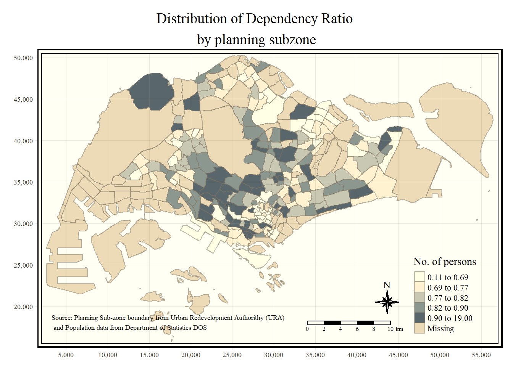

pacman::p_load(sf, tmap, tidyverse)Hands-on Exercise 2: Thematic Mapping and GeoVisualisation with R
Hands-on Exercise
tidyverse
sf
tmap
choropleth map
distribution of dependency ratio
2.2 Getting Started
The R packages we’ll be introducing today are:
- tmap: used for creating thematic maps, such as choropleth and bubble maps
In addition, the packages from our last lesson:
sf: used for importing, managing, and processing geospatial data (handling geospatial)
tidyverse: used for importing, wrangling and visualising data (tidying data)
dplyr: wrangling data
readr: importing delimited text file
Among the four packages, readr, tidyr and dplyr are part of tidyverse package.
To load the 4 packages that we will be using readr, tidyr and dplyr and sf packages:
2.3 Importing Data into R
Two data set will be used to create the choropleth map. They are:
Master Plan 2014 Subzone Boundary (Web) (i.e.
MP14_SUBZONE_WEB_PL) in ESRI shapefile format. It can be downloaded at data.gov.sg This is a geospatial data. It consists of the geographical boundary of Singapore at the planning subzone level. The data is based on URA Master Plan 2014.Singapore Residents by Planning Area / Subzone, Age Group, Sex and Type of Dwelling, June 2011-2020 in csv format (i.e.
respopagesextod2011to2020.csv). This is an aspatial data fie. It can be downloaded at Department of Statistics, Singapore Although it does not contain any coordinates values, but it’s PA and SZ fields can be used as unique identifiers to geocode toMP14_SUBZONE_WEB_PLshapefile.
Note: aspatial data file does not contain any coordinates values, but it’s PA and SZ fields can be used as unique identifiers to geocode to
MP14_SUBZONE_WEB_PLshapefile
2.3.2 Importing Geospatial Data into R
This code uses st_read() function of sf package to import MP14_SUBZONE_WEB_PL shapefile into R as a simple feature data frame called mpsz.
mpsz <- st_read(dsn = "data/geospatial",
layer = "MP14_SUBZONE_WEB_PL")Reading layer `MP14_SUBZONE_WEB_PL' from data source
`C:\Feliciaeng29\IS415-GAA\Hands-on_Ex\Hands-on_Ex02\data\geospatial'
using driver `ESRI Shapefile'
Simple feature collection with 323 features and 15 fields
Geometry type: MULTIPOLYGON
Dimension: XY
Bounding box: xmin: 2667.538 ymin: 15748.72 xmax: 56396.44 ymax: 50256.33
Projected CRS: SVY21Examine the content of mpsz by (Note: only the first 10 records are displayed for brevity)
mpszSimple feature collection with 323 features and 15 fields
Geometry type: MULTIPOLYGON
Dimension: XY
Bounding box: xmin: 2667.538 ymin: 15748.72 xmax: 56396.44 ymax: 50256.33
Projected CRS: SVY21
First 10 features:
OBJECTID SUBZONE_NO SUBZONE_N SUBZONE_C CA_IND PLN_AREA_N
1 1 1 MARINA SOUTH MSSZ01 Y MARINA SOUTH
2 2 1 PEARL'S HILL OTSZ01 Y OUTRAM
3 3 3 BOAT QUAY SRSZ03 Y SINGAPORE RIVER
4 4 8 HENDERSON HILL BMSZ08 N BUKIT MERAH
5 5 3 REDHILL BMSZ03 N BUKIT MERAH
6 6 7 ALEXANDRA HILL BMSZ07 N BUKIT MERAH
7 7 9 BUKIT HO SWEE BMSZ09 N BUKIT MERAH
8 8 2 CLARKE QUAY SRSZ02 Y SINGAPORE RIVER
9 9 13 PASIR PANJANG 1 QTSZ13 N QUEENSTOWN
10 10 7 QUEENSWAY QTSZ07 N QUEENSTOWN
PLN_AREA_C REGION_N REGION_C INC_CRC FMEL_UPD_D X_ADDR
1 MS CENTRAL REGION CR 5ED7EB253F99252E 2014-12-05 31595.84
2 OT CENTRAL REGION CR 8C7149B9EB32EEFC 2014-12-05 28679.06
3 SR CENTRAL REGION CR C35FEFF02B13E0E5 2014-12-05 29654.96
4 BM CENTRAL REGION CR 3775D82C5DDBEFBD 2014-12-05 26782.83
5 BM CENTRAL REGION CR 85D9ABEF0A40678F 2014-12-05 26201.96
6 BM CENTRAL REGION CR 9D286521EF5E3B59 2014-12-05 25358.82
7 BM CENTRAL REGION CR 7839A8577144EFE2 2014-12-05 27680.06
8 SR CENTRAL REGION CR 48661DC0FBA09F7A 2014-12-05 29253.21
9 QT CENTRAL REGION CR 1F721290C421BFAB 2014-12-05 22077.34
10 QT CENTRAL REGION CR 3580D2AFFBEE914C 2014-12-05 24168.31
Y_ADDR SHAPE_Leng SHAPE_Area geometry
1 29220.19 5267.381 1630379.3 MULTIPOLYGON (((31495.56 30...
2 29782.05 3506.107 559816.2 MULTIPOLYGON (((29092.28 30...
3 29974.66 1740.926 160807.5 MULTIPOLYGON (((29932.33 29...
4 29933.77 3313.625 595428.9 MULTIPOLYGON (((27131.28 30...
5 30005.70 2825.594 387429.4 MULTIPOLYGON (((26451.03 30...
6 29991.38 4428.913 1030378.8 MULTIPOLYGON (((25899.7 297...
7 30230.86 3275.312 551732.0 MULTIPOLYGON (((27746.95 30...
8 30222.86 2208.619 290184.7 MULTIPOLYGON (((29351.26 29...
9 29893.78 6571.323 1084792.3 MULTIPOLYGON (((20996.49 30...
10 30104.18 3454.239 631644.3 MULTIPOLYGON (((24472.11 29...Importing Attribute Data into R
Import respopagsex2011to2020csv file into RStudio and save the file into R dataframe called popdata.
The task will be performed by using read_csv() function of readr package as shown in the code chunk below.
popdata <- read_csv("data/aspatial/respopagesextod2011to2020.csv")Rows: 984656 Columns: 7
── Column specification ────────────────────────────────────────────────────────
Delimiter: ","
chr (5): PA, SZ, AG, Sex, TOD
dbl (2): Pop, Time
ℹ Use `spec()` to retrieve the full column specification for this data.
ℹ Specify the column types or set `show_col_types = FALSE` to quiet this message.Note to self:
geospatial data:
st_read()attribute data:
read_csv()
2.3.4 Data Preparation
To prepare a data table with year 2020 values. The data table should include the variables PA, SZ, YOUNG, ECONOMY ACTIVE, AGED, TOTAL, DEPENDENCY.
YOUNG: age group 0 to 4 until age groyup 20 to 24,
ECONOMY ACTIVE: age group 25-29 until age group 60-64,
AGED: age group 65 and above, TOTAL: all age group, and
DEPENDENCY: the ratio between young and aged against economy active group
2.3.4.1 Data Wrangling
For data wrangling and transformation the following function will be used:
pivot_wider() of tidyr package, and
mutate(), filter(), group_by() and select() of dplyr package
popdata2020 <- popdata %>%
filter(Time == 2020) %>%
group_by(PA, SZ, AG) %>%
summarise(`POP` = sum(`Pop`)) %>%
ungroup()%>%
pivot_wider(names_from=AG,
values_from=POP) %>%
mutate(YOUNG = rowSums(.[3:6])
+rowSums(.[12])) %>%
mutate(`ECONOMY ACTIVE` = rowSums(.[7:11])+
rowSums(.[13:15]))%>%
mutate(`AGED`=rowSums(.[16:21])) %>%
mutate(`TOTAL`=rowSums(.[3:21])) %>%
mutate(`DEPENDENCY` = (`YOUNG` + `AGED`)
/`ECONOMY ACTIVE`) %>%
select(`PA`, `SZ`, `YOUNG`,
`ECONOMY ACTIVE`, `AGED`,
`TOTAL`, `DEPENDENCY`)`summarise()` has grouped output by 'PA', 'SZ'. You can override using the
`.groups` argument.Note to self:
filter(Time == 2020): It filters the dataset to include only rows where the “Time” variable is equal to 2020.
group_by(PA, SZ, AG): It groups the filtered data by the variables PA, SZ, and AG.
summarise(POP = sum(Pop)): It calculates the sum of the “Pop” variable for each group of PA, SZ, and AG and renames the sum as “POP.”
ungroup(): It removes the grouping, ensuring that subsequent operations are applied to the entire dataset.
pivot_wider(names_from=AG, values_from=POP): It reshapes the data, making it wider by creating new columns for each unique value in the “AG” variable and populating these columns with corresponding values from the “POP” variable.
mutate(YOUNG = rowSums(.[3:6]) + rowSums(.[12])): It creates a new column named “YOUNG” by summing the values across specific columns representing age groups 0 to 4, 5 to 9, 10 to 14, 15 to 19, and 60 to 64.
mutate('ECONOMY ACTIVE' = rowSums(.[7:11]) + rowSums(.[13:15])): It creates a new column named “ECONOMY ACTIVE” by summing the values across specific columns representing age groups 25 to 29, 30 to 34, 35 to 39, 40 to 44, 45 to 49, 50 to 54, and 55 to 59.
mutate('AGED' = rowSums(.[16:21])): It creates a new column named “AGED” by summing the values across specific columns representing age groups 65 and above.
mutate('TOTAL' = rowSums(.[3:21])): It creates a new column named “TOTAL” by summing the values across all age group columns.
mutate('DEPENDENCY' = ('YOUNG' + 'AGED') / 'ECONOMY ACTIVE'): It creates a new column named “DEPENDENCY” by calculating the ratio between the sum of “YOUNG” and “AGED” against “ECONOMY ACTIVE.”
select('PA', 'SZ', 'YOUNG', 'ECONOMY ACTIVE', 'AGED', 'TOTAL', 'DEPENDENCY'): It selects specific columns from the final dataset, including PA, SZ, YOUNG, ECONOMY ACTIVE, AGED, TOTAL, and DEPENDENCY.
2.3.4.2 Joining the attribute data and geospatial data
Before we can perform the georelational join, one extra step is required to convert the values in PA and SZ fields to uppercase. This is because the values of PA and SZ fields are made up of upper- and lowercase. On the other, hand the SUBZONE_N and PLN_AREA_N are in uppercase.
popdata2020 <- popdata2020 %>%
mutate_at(.vars = vars(PA, SZ),
.funs = list(toupper)) %>%
filter(`ECONOMY ACTIVE` > 0)Note to self:
mutate_at(.vars = vars(PA, SZ), .funs = list(toupper)): This line uses themutate_atfunction from the dplyr package to apply thetoupperfunction (which converts strings to uppercase) to the specified columns “PA” and “SZ.” This ensures that the values in these columns are in uppercase, as geospatial data often uses uppercase identifiers for consistency.
filter(ECONOMY ACTIVE > 0): After converting the values to uppercase, this line filters the dataset to include only rows where the “ECONOMY ACTIVE” column has values greater than 0. This step is likely done to exclude rows with no economic activity, focusing on areas with some level of economic activity.To sum up, the code is cleaning and preparing the ‘popdata2020’ dataset for georelational join by converting certain columns to uppercase and filtering out rows with no economic activity.
Next, left_join() of dplyr is used to join the geographical data and attribute table using planning subzone name e.g. SUBZONE_N and SZ as the common identifier.
mpsz_pop2020 <- left_join(mpsz, popdata2020,
by = c("SUBZONE_N" = "SZ"))Thing to learn from the code chunk above:
- left_join() of dplyr package is used with
mpszsimple feature data frame as the left data table is to ensure that the output will be a simple features data frame.
What is the difference between left join and right join?
Left Join:
Definition: A left join returns all rows from the left (or first) table and the matching rows from the right (or second) table. If there is no match in the right table, the result will contain NULL values for columns from the right table.
Syntax:
left_join(a, b, by = c("common_column_name"))Use Case: Use a left join when the dataframe
ais considered the main dataframe, and you want to keep all the records from it while also adding matched records from dataframeb.Example Code:
left_join(main_dataframe, additional_dataframe, by = c("common_column"))Right Join:
Definition: A right join returns all rows from the right (or second) table and the matching rows from the left (or first) table. If there is no match in the left table, the result will contain NULL values for columns from the left table.
Syntax:
right_join(a, b, by = c("common_column_name"))Use Case: Use a right join when the dataframe
bis considered the main dataframe, and you want to keep all the records from it while also adding matched records from dataframea.Example Code:
right_join(main_dataframe, additional_dataframe, by = c("common_column"))
write_rds(mpsz_pop2020, "data/rds/mpszpop2020.rds")2.4 Choropleth Mapping Geospatial Data Using tmap
Choropleth mapping involves the symbolisation of enumeration units, such as countries, provinces, states, counties or census units, using area patterns or graduated colors. For example, a social scientist may need to use a choropleth map to portray the spatial distribution of aged population of Singapore by Master Plan 2014 Subzone Boundary.
Two approaches can be used to prepare thematic map using tmap, they are:
Plotting a thematic map quickly by using qtm().
Plotting highly customisable thematic map by using tmap elements.
2.4.1 Plotting a choropleth map quickly by using qtm()
The easiest and quickest to draw a choropleth map using tmap is using qtm(). It is concise and provides a good default visualisation in many cases.
This code will draw a cartographic standard choropleth map
tmap_mode("plot")tmap mode set to plottingqtm(mpsz_pop2020,
fill = "DEPENDENCY")
Things to learn:
tmap_mode() with “plot” option is used to produce a static map. For interactive mode, “view” option should be used.
fill argument is used to map the attribute (i.e. DEPENDENCY)
Note to self:
tmap_mode("plot"): Sets the plotting mode fortmapto “plot,” indicating that the subsequent mapping operations will generate a plot.
qtm(mpsz_pop2020, fill = "DEPENDENCY"): This line is responsible for creating the choropleth map.
mpsz_pop2020: Specifies the dataframe containing the spatial and attribute data for the map.
fill = "DEPENDENCY": Specifies that the variable “DEPENDENCY” from the dataframe should be used to determine the fill color of the map.
2.4.2 Creating a choropleth map by using tmap’s elements
Despite its usefulness of drawing a choropleth map quickly and easily, the disadvantge of qtm() is that it makes aesthetics of individual layers harder to control. To draw a high quality cartographic choropleth map as shown in the figure below, tmap’s drawing elements should be used.
tm_shape(mpsz_pop2020)+
tm_fill("DEPENDENCY",
style = "quantile",
palette = "Blues",
title = "Dependency ratio") +
tm_layout(main.title = "Distribution of Dependency Ratio by planning subzone",
main.title.position = "center",
main.title.size = 1.2,
legend.height = 0.45,
legend.width = 0.35,
frame = TRUE) +
tm_borders(alpha = 0.5) +
tm_compass(type="8star", size = 2) +
tm_scale_bar() +
tm_grid(alpha =0.2) +
tm_credits("Source: Planning Sub-zone boundary from Urban Redevelopment Authorithy (URA)\n and Population data from Department of Statistics DOS",
position = c("left", "bottom"))
Note to self:
tm_shape(mpsz_pop2020): Specifies the spatial object (mpsz_pop2020) that will be used as the base layer for the map.
tm_fill("DEPENDENCY", style = "quantile", palette = "Blues", title = "Dependency ratio"): Defines the fill style of the map based on the “DEPENDENCY” variable.
style = "quantile": Indicates that a quantile classification method should be used for the choropleth map.
palette = "Blues": Specifies the color palette to be used for filling the map. In this case, it’s the “Blues” palette.
title = "Dependency ratio": Sets the title for the legend associated with the “DEPENDENCY” variable.
tm_layout(): Configures the overall layout and appearance of the map.
main.title: Specifies the main title of the map.
main.title.position,main.title.size: Controls the position and size of the main title.
legend.height,legend.width: Sets the height and width of the legend.
frame = TRUE: Indicates that a frame should be added around the legend.
tm_borders(alpha = 0.5): Adds borders to the map with a specified level of transparency (alpha = 0.5).
tm_compass(type="8star", size = 2): Adds a compass to the map with a specified type (“8star”) and size.
tm_scale_bar(): Adds a scale bar to the map.
tm_grid(alpha =0.2): Adds a grid to the map with a specified level of transparency (alpha = 0.2).
tm_credits(): Adds credits or a source attribution to the map.
"Source: Planning Sub-zone boundary from Urban Redevelopment Authority (URA)\n and Population data from Department of Statistics DOS": Specifies the source information.
position = c("left", "bottom"): Sets the position of the credits on the map.
2.4.2.1 Drawing a base map
The basic building block of tmap is tm_shape() followed by one or more layer elemments such as tm_fill() and tm_polygons().
tm_shape()is used to define the input data (i.e mpsz_pop2020)tm_polygons()is used to draw the planning subzone polygons
tm_shape(mpsz_pop2020) +
tm_polygons()
2.4.2.2 Drawing a choropleth map using tm_polygons()
To draw a choropleth map showing the geographical distribution of a selected variable by planning subzone, we just need to assign the target variable such as “DEPENDENCY” to tm_polygons().
tm_shape(mpsz_pop2020)+
tm_polygons("DEPENDENCY")
Things to learn from tm_polygons():
The default interval binning used to draw the choropleth map is called “pretty”. A detailed discussion of the data classification methods supported by tmap will be provided in sub-section 4.3.
The default colour scheme used is
YlOrRdof ColorBrewer. You will learn more about the color scheme in sub-section 4.4.By default, Missing value will be shaded in grey.
2.4.2.3 Drawing a choropleth map using tm_fill() and tm_border()
Actually, tm_polygons() is a wraper of tm_fill() and tm_border(). tm_fill() shades the polygons by using the default colour scheme and tm_borders() adds the borders of the shapefile onto the choropleth map.
The code chunk below draws a choropleth map by using tm_fill() alone.
tm_shape(mpsz_pop2020)+
tm_fill("DEPENDENCY")
Notice that the planning subzones are shared according to the respective dependecy values.
Note to self:
- tm_polygons() is a wrapper of tm_fill() and tm_border(). tm_fill() shades the polygons(using the default colour scheme) while tm_borders() adds the borders of the shapefile onto the choropleth map.
To add the boundary of the planning subzones, tm_borders() will be used.
tm_shape(mpsz_pop2020)+
tm_fill("DEPENDENCY") +
tm_borders(lwd = 0.1, alpha = 1)
Notice that light-gray border lines have been added on the choropleth map.
The alpha argument is used to define transparency number between 0 (totally transparent) and 1 (not transparent). By default, the alpha value of the col is used (normally 1).
Beside alpha argument, there are three other arguments for tm_borders(), they are:
col = border colour,
lwd = border line width. The default is 1, and
lty = border line type. The default is “solid”.
2.4.3 Data Classification methods of tmap
Most choropleth maps employ some methods of data classification. The point of classification is to take a large number of observations and group them into data ranges or classes.
tmap provides a total ten data classification methods, namely: fixed, sd, equal, pretty (default), quantile, kmeans, hclust, bclust, fisher, and jenks.
To define a data classification method, the style argument of tm_fill() or tm_polygons() will be used.
2.4.3.1 Plotting choropleth maps with built-in classification methods
This code below shows a quantile data classification that used 5 classes.
tm_shape(mpsz_pop2020)+
tm_fill("DEPENDENCY",
n = 5,
style = "quantile") +
tm_borders(alpha = 0.5)
This code below, equal data classification method is used.
tm_shape(mpsz_pop2020)+
tm_fill("DEPENDENCY",
n = 5,
style = "equal") +
tm_borders(alpha = 0.5)
Notice that the distribution of quantile data classification method are more evenly distributed then equal data classification method.
2.4.3.2 Plotting choropleth map with custom break
For all the built-in styles, the category breaks are computed internally. In order to override these defaults, the breakpoints can be set explicitly by means of the breaks argument to the tm_fill().
It is important to note that, in tmap the breaks include a minimum and maximum. As a result, in order to end up with n categories, n+1 elements must be specified in the breaks option (the values must be in increasing order).
Before we get started, it is always a good practice to get some descriptive statistics on the variable before setting the break points. Code chunk below will be used to compute and display the descriptive statistics of DEPENDENCY field.
summary(mpsz_pop2020$DEPENDENCY) Min. 1st Qu. Median Mean 3rd Qu. Max. NA's
0.1111 0.7147 0.7866 0.8585 0.8763 19.0000 92 With reference to the results above, we set break point at 0.60, 0.70, 0.80, and 0.90. In addition, we also need to include a minimum and maximum, which we set at 0 and 100. Our breaks vector is thus c(0, 0.60, 0.70, 0.80, 0.90, 1.00)
Now, we will plot the choropleth map by using this code below.
tm_shape(mpsz_pop2020)+
tm_fill("DEPENDENCY",
breaks = c(0, 0.60, 0.70, 0.80, 0.90, 1.00)) +
tm_borders(alpha = 0.5)Warning: Values have found that are higher than the highest break
2.4.4 Colour Scheme
tmap supports colour ramps either defined by the user or a set of predefined colour ramps from the RColorBrewer package.
2.4.4.1 Using ColourBrewer palette
To change the colour, we assign the preferred colour to palette argument of tm_fill() as shown.
tm_shape(mpsz_pop2020)+
tm_fill("DEPENDENCY",
n = 6,
style = "quantile",
palette = "Blues") +
tm_borders(alpha = 0.5)
Notice that the choropleth map is shaded in green.
To reverse the colour shading, add a “-” prefix.
tm_shape(mpsz_pop2020)+
tm_fill("DEPENDENCY",
style = "quantile",
palette = "-Greens") +
tm_borders(alpha = 0.5)
Notice that the colour scheme has been reversed.
2.4.5 Map Layouts
Map layout refers to the combination of all map elements into a cohensive map. Map elements include among others the objects to be mapped, the title, the scale bar, the compass, margins and aspects ratios. Colour settings and data classification methods covered in the previous section relate to the palette and break-points are used to affect how the map looks.
2.4.5.1 Map Legend
In tmap, several legend options are provided to change the placement, format and appearance of the legend.
tm_shape(mpsz_pop2020)+
tm_fill("DEPENDENCY",
style = "jenks",
palette = "Blues",
legend.hist = TRUE,
legend.is.portrait = TRUE,
legend.hist.z = 0.1) +
tm_layout(main.title = "Distribution of Dependency Ratio by planning subzone \n(Jenks classification)",
main.title.position = "center",
main.title.size = 1,
legend.height = 0.45,
legend.width = 0.35,
legend.outside = FALSE,
legend.position = c("right", "bottom"),
frame = FALSE) +
tm_borders(alpha = 0.5)
2.4.5.2 Map style
tmap allows a wide variety of layout settings to be changed. They can be called by using tmap_style().
The code shows the classic style is used. tmap_style("classic")
tm_shape(mpsz_pop2020)+
tm_fill("DEPENDENCY",
style = "quantile",
palette = "-Greens") +
tm_borders(alpha = 0.5) +
tmap_style("classic")tmap style set to "classic"other available styles are: "white", "gray", "natural", "cobalt", "col_blind", "albatross", "beaver", "bw", "watercolor" 
2.4.5.3 Cartographic Furniture
Beside map style, tmap also also provides arguments to draw other map furniture such as compass, scale bar and grid lines.
In the code chunk below, tm_compass(), tm_scale_bar() and tm_grid() are used to add compass, scale bar and grid lines onto the choropleth map.
tm_shape(mpsz_pop2020)+
tm_fill("DEPENDENCY",
style = "quantile",
palette = "Blues",
title = "No. of persons") +
tm_layout(main.title = "Distribution of Dependency Ratio \nby planning subzone",
main.title.position = "center",
main.title.size = 1.2,
legend.height = 0.45,
legend.width = 0.35,
frame = TRUE) +
tm_borders(alpha = 0.5) +
tm_compass(type="8star", size = 2) +
tm_scale_bar(width = 0.15) +
tm_grid(lwd = 0.1, alpha = 0.2) +
tm_credits("Source: Planning Sub-zone boundary from Urban Redevelopment Authorithy (URA)\n and Population data from Department of Statistics DOS",
position = c("left", "bottom"))
To reset the default style, refer to the code chunk below.
tmap_style("white")tmap style set to "white"other available styles are: "gray", "natural", "cobalt", "col_blind", "albatross", "beaver", "bw", "classic", "watercolor" 2.4.6 Drawing Small Multiple Choropleth Maps
Small multiple maps, also referred to as facet maps, are composed of many maps arrange side-by-side, and sometimes stacked vertically. Small multiple maps enable the visualisation of how spatial relationships change with respect to another variable, such as time.
In tmap, small multiple maps can be plotted in three ways:
by assigning multiple values to at least one of the asthetic arguments,
by defining a group-by variable in tm_facets(), and
by creating multiple stand-alone maps with tmap_arrange().
2.4.6.1 By assigning values to at least one of the aesthetic arguments
Here small multiple choropleth maps are created by defining ncols in tm_fill()
tm_shape(mpsz_pop2020)+
tm_fill(c("YOUNG", "AGED"),
style = "equal",
palette = "Blues") +
tm_layout(legend.position = c("right", "bottom")) +
tm_borders(alpha = 0.5) +
tmap_style("white")tmap style set to "white"other available styles are: "gray", "natural", "cobalt", "col_blind", "albatross", "beaver", "bw", "classic", "watercolor" 
In this example, small multiple choropleth maps are created by assigning multiple values to at least one of the aesthetic arguments
tm_shape(mpsz_pop2020)+
tm_polygons(c("DEPENDENCY","AGED"),
style = c("equal", "quantile"),
palette = list("Blues","Greens")) +
tm_layout(legend.position = c("right", "bottom"))
2.4.6.2 By defining a group-by variable in tm_facets()
In this example, multiple small choropleth maps are created by using tm_facets().
tm_shape(mpsz_pop2020) +
tm_fill("DEPENDENCY",
style = "quantile",
palette = "Blues",
thres.poly = 0) +
tm_facets(by="REGION_N",
free.coords=TRUE,
drop.shapes=TRUE) +
tm_layout(legend.show = FALSE,
title.position = c("center", "center"),
title.size = 20) +
tm_borders(alpha = 0.5)Warning: The argument drop.shapes has been renamed to drop.units, and is
therefore deprecated
2.4.6.3 By creating multiple stand-alone maps with tmap_arrange()
In this example, multiple small choropleth maps are created by creating multiple stand-alone maps with tmap_arrange().
youngmap <- tm_shape(mpsz_pop2020)+
tm_polygons("YOUNG",
style = "quantile",
palette = "Blues")
agedmap <- tm_shape(mpsz_pop2020)+
tm_polygons("AGED",
style = "quantile",
palette = "Blues")
tmap_arrange(youngmap, agedmap, asp=1, ncol=2)
2.4.7 Mapping Spatial Object Meeting a Selection Criterion
Instead of creating small multiple choropleth map, you can also use selection function to map spatial objects meeting the selection criterion.
tm_shape(mpsz_pop2020[mpsz_pop2020$REGION_N=="CENTRAL REGION", ])+
tm_fill("DEPENDENCY",
style = "quantile",
palette = "Blues",
legend.hist = TRUE,
legend.is.portrait = TRUE,
legend.hist.z = 0.1) +
tm_layout(legend.outside = TRUE,
legend.height = 0.45,
legend.width = 5.0,
legend.position = c("right", "bottom"),
frame = FALSE) +
tm_borders(alpha = 0.5)Warning in pre_process_gt(x, interactive = interactive, orig_crs =
gm$shape.orig_crs): legend.width controls the width of the legend within a map.
Please use legend.outside.size to control the width of the outside legend